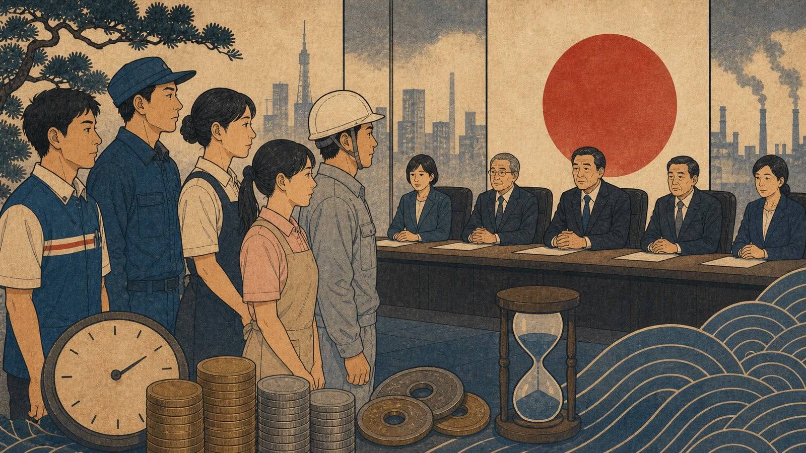

A atualização do salário mínimo japonês precisa ser lida em duas etapas: recomendação nacional e valor final por província. O Conselho Central de Salário Mínimo, ligado ao MHLW, define uma orientação de reajuste. Depois, os conselhos locais e governos provinciais publicam os valores aplicáveis em cada região.

Por isso, uma manchete sobre média nacional não significa pagamento automático no dia seguinte. O que vale para o trabalhador é o salário mínimo da província onde o trabalho é prestado, com a data de vigência publicada localmente. Essa distinção é essencial para brasileiros em fábricas, arubaito, empreiteiras, hotelaria, restaurantes e logística.
O que foi anunciado
Em 28 e 29 de julho de 2026, veículos japoneses e internacionais noticiaram uma recomendação nacional de alta recorde para o salário mínimo médio. A informação deve ser tratada como orientação do conselho central até que cada província conclua seu processo e publique o valor final.
Fato confirmado: o Japão usa salário mínimo regional por hora, e o MHLW publica a lista nacional por província. Projeção ou etapa em andamento: impacto exato no holerite de cada trabalhador antes da publicação local.
Como verificar seu caso
Confira três dados: província do local de trabalho, valor por hora em vigor e data a partir da qual ele passa a valer. Se você trabalha por empreiteira em outra cidade, olhe o local real de prestação do serviço, não apenas o endereço da empresa.
Se o valor pago parecer inferior ao mínimo local, guarde contrato, holerite, escala e comprovantes de horas. A consulta pode começar no Labour Standards Inspection Office ou em canais de orientação trabalhista. Diferenças de adicional noturno, horas extras e descontos exigem leitura do holerite inteiro, não só do valor bruto.
Aviso de atualização
Texto revisado em 10 de agosto de 2026. Salário mínimo muda por província e por data de vigência; confirme a tabela do MHLW e o anúncio local antes de tomar decisão trabalhista.
Fontes consultadas
- MHLW: lista de salários mínimos por província
- Ministry of Health, Labour and Welfare
- Reuters: cobertura econômica do Japão